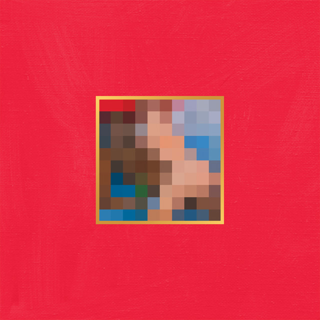

About Me
Kreative Mediamatikerin mit Leidenschaft für Design, Marketing & Technologie
My Journey

Bildung
Technische Berufsmaturität
Mit der Abgabe meiner interdisziplinären Arbeit zum Thema „Die Illusion der freien Meinung" schloss ich meine Ausbildung ab. Die Arbeit analysiert neurowissenschaftliche Faktoren wie hormonelle Steuerung und soziologische Einflüsse sowie die Auswirkungen von Social Media und KI auf demokratische Prozesse.
Mediamatikerin EFZ
Als Abschluss meiner vierjährigen Ausbildung entwickelte ich für die Werbeagentur Komthur ein umfassendes Online-Marketing-Konzept mit strategischer Marktanalyse, UI/UX-Website-Redesign, SEO/SEA-Optimierung und halbjährlichem Social-Media-Plan.
Social Media Management
Im zweiten Lehrjahr bei SBW Neue Medien umfasste mein Aufgabenbereich die Konzeption und Umsetzung zielgruppengerechter Inhalte für Instagram und TikTok. Vertiefung in Design und Animation.
Sportmarketing
Praktikumsjahr im Bereich Sportmarketing. Erstellen von Festführern, Sponsoring-Materialien und Bandenanimationen für große Sportevents wie die Schweizermeisterschaft im Kunstturnen.
Ausbildung zur Mediamatikerin
Beginn der zwei-jährigen schulischen Ausbildung.
Praktikum Social Media
Bei Hillsong Germany übernahm ich die Mediaverantwortung für den Young & Free-Bereich. Social-Media-Management mit Fokus auf Instagram: Event-Trailer, Screen-Designs, Flyer und Video-/Fotoproduktion.
Meine Favoriten


Mein Spotify wrapped



Technical Skills
- Adobe InDesign
- Photoshop
- Premiere Pro
- After Effects
- Frontend (HTML, CSS, JS)
- Backend (NodeJS, PHP)
- Marketing & Social Media
Soft Skills
- Strategisch
- Entschlossen
- Effizient
- Kreativ & Analytisch
- Perfektionistisch
- Selbstreflektiert